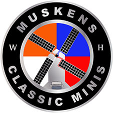

Wilfred Muskens
President and CEO
Lancaster, PA
USA
Hans Muskens
VP Europe
Breukelen (Utrecht)
Netherlands
FOR OVER 35 YEARDS - CLASSIC MINIS
HAVE BEEN OUR PASSION
We love our Classic Minis! Over the past 35 years, we have owned,
fixed, driven and flat out loved our Minis.
Now, we’ve raised the bar on Classic Mini restortaion
WITH THE BUILT TO ORDER ZANDVOORT LIMITED.
First we search the globe for the best donor cars -
stripping them down to the metal,
Restoring the essential structures and reengineering every part.
Our interiors use bespoke leather or other high end materials.
Plus soild wood dashs and steering wheels, consoles, sound sytems, gauges and
other options you can choose from you can choose from.
We’ll ship your new Musken Classic Mini to almost any country rght to
your driveway, deal with shipping legalites so you have full Titles ready for your registration – all inclusive.
Our focus right now is The Netherlands, United Kingdom and western Euorpe.
